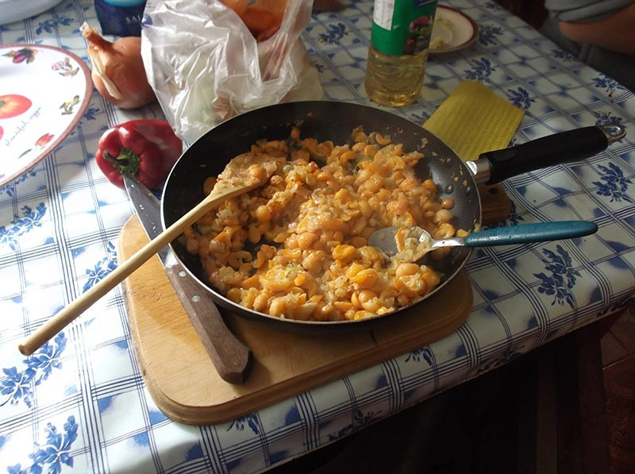
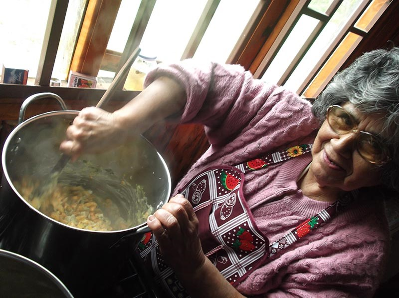

Dihueñes
-

- 
- 
Dihueñes
El dihueñe es un parasito del reino de los hongos asociados específicamente al género de los nothofagus (hualles y pellines), pero también yo los he visto en el coihue pero le llaman a ese hongo llao llao, de aspecto similar al dihueñe, pero más dulce y parece más húmedo.
Los dihueñes son particulares, asociados a esta flora única en el planeta también.
Son de una estructura visual muy bonita, de atractivo color, de singular textura y muy versátil, al tener un sabor neutro.
Tradicionalmente se preparan en ensaladas, con huevos, en sopa, en empanadas, en tartaletas.
Es sabia la naturaleza, cuando justo ya está escaseando la comida, cultivada y natural, llegan ellos los dihueñes El año pasado se hizo una fiesta y un concurso gastronómico acerca de este producto, en Cañete.
Como es un producto de primavera las mujeres más sabias y entrenadas se preparan en sus huertas para que el cibulette y cilantro esté listo para recibirlo en la mesa.
Antiguamente al no existir refrigeradores y toda la tecnología disponible hoy se secaban en cuelgas al igual que los orejones de manzana.
Por hoy en día se seleccionan, se separan en bolsitas y se pueden congelar, otra forma es encurtirlos y conservarlos en aceite en frascos esterilizados y sellados.
Las precauciones es tomar lo que están blancos y tiernos después de la lluvia se agusanan.
Tomar los dihueñes ofrece una oportunidad para en familia o en buena compañía disfrutar de un agradable paseo, esta recolección nos posibilita conectarnos con el ciclo en que llegan, estar presente y conectados con la naturaleza, luego de compartir esta experiencia adornada o no de un rico refrigerio, o algo para tomar calientito, cuando preparemos los dihueñes, y los disfrutemos en nuestra comida, será una experiencia integral, para la mente, para el alma y para nuestro cuerpo.
Deseo tengan la posibilidad de disfrutar de esto, o de al menos vivenciarlo a través de la memoria.